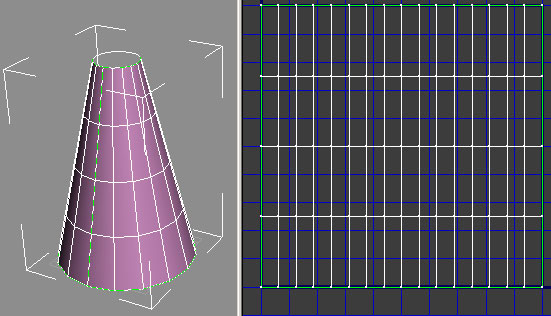
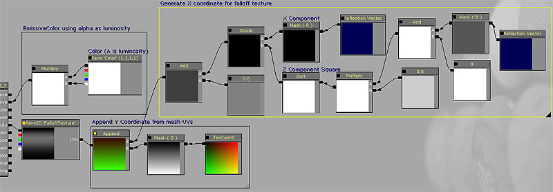
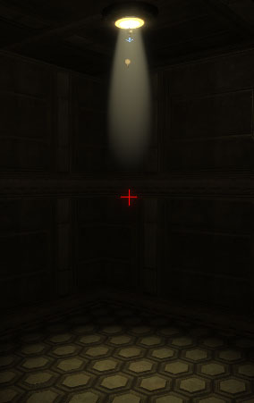
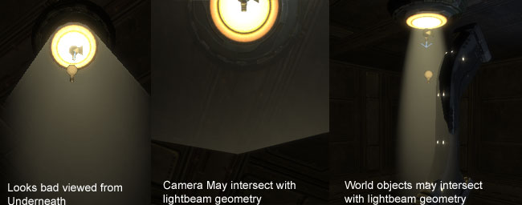
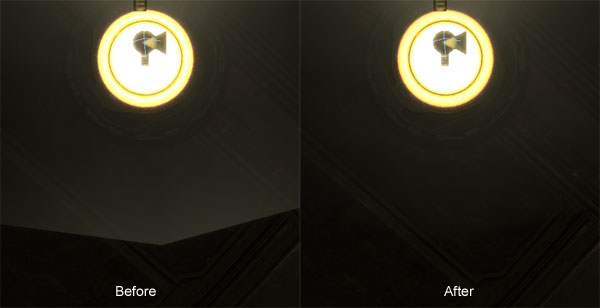
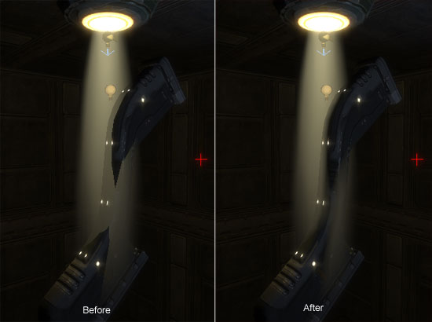
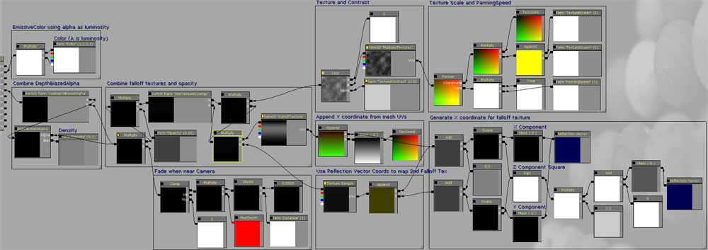

UDN
Search public documentation:
VolumetricLightbeamTutorialCH
English Translation
日本語訳
한국어
Interested in the Unreal Engine?
Visit the Unreal Technology site.
Looking for jobs and company info?
Check out the Epic games site.
Questions about support via UDN?
Contact the UDN Staff
日本語訳
한국어
Interested in the Unreal Engine?
Visit the Unreal Technology site.
Looking for jobs and company info?
Check out the Epic games site.
Questions about support via UDN?
Contact the UDN Staff
体积感光束教程
概述
教程内容
LightBeams

创建静态网格物体
EngineVolumetrics 包已经有三个不同角度的锥形变体，但是它们都有相同的 UV。这部分将会向您说明为了制作更多要使用该材质的自定义锥形网格物体您需要做哪些操作。 创建一个边锥形化的圆柱并将其展开，这样在 UV 中就只有一条光束。由于材质计算在切线空间中进行，有一个整洁的 UV 这一点非常重要，而不整洁的 UV 可能会导致以后的视频扭曲。您的网格物体细分的越多，最终结果的衰减系数越平滑（16 面的圆柱分成 4 个垂直切片效果会很好）。 这三个已经在 EngineVolumetrics 中的锥形变体应该足以应付大多数情况。
创建材质
材质创建是流程中最棘手的部分。首先，我们会获取最基础等级的光束功能，然后我们会一次一个地解决每一个失真问题。FalloffTexture
首先，我们需要创建一个衰减贴图。衰减贴图的外观是形成最终结果的外观的主要原因。已经在 Photoshop 中使用 Render（渲染）->Light Effects（光效）过滤创建完整的衰减贴图。在顶部描绘了一条模糊的黑色线。 \\Build\UnrealEngine3-Build\Engine\Content\EngineVolumetrics.LightBeam.Materials. T_EV_LightBeam_Falloff_01 要记录下来的重要质量是贴图所有边周围完全是黑色，而且贴图的顶部是渐渐变为黑色。这可以帮助隐藏 Static Mesh（静态网格物体）的顶部边的位置。请确保将该贴图属性设置为 Clamp（固定）。在该材质中它的贴图样本将会是 TextureSample2DParameter，这样您就可以在您的光束上使用各种不同的衰减贴图。
要记录下来的重要质量是贴图所有边周围完全是黑色，而且贴图的顶部是渐渐变为黑色。这可以帮助隐藏 Static Mesh（静态网格物体）的顶部边的位置。请确保将该贴图属性设置为 Clamp（固定）。在该材质中它的贴图样本将会是 TextureSample2DParameter，这样您就可以在您的光束上使用各种不同的衰减贴图。
设置材质
现在，我们准备开始创建材质。创建一个新的材质并在材质设置中设置以下选项： BlendMode: BLEND_Translucent LightModel: MLM_Unlit TwoSided: True 我们只会使用到两个材质输入字段： Emissive（自发光）和 Opacity（不透明）。自发光字段应该只包含光束的颜色信息。目前，将一个简单的 VectorParameter (1, 1, 1, 1) 用于自发光。VectorParameter 的 Alpha 通道通过 RGB 进行控制。它可以让您使用 Alpha 修改 Brightness（亮度），这样您就可以使用颜色选取器选择 RGB 值（它只支持小于 1 的值），而且如果您愿意，仍然可以使光束随意发散。可以更改颜色的照明独立这一功能通常很有用。
不透明字段是大多数魔法发生的地方。它会处理光束的衰减而且会包含贴图信息来添加灰尘或滚动的烟雾。
我们会使用如上不透明所示的衰减贴图。对于衰减贴图的贴图坐标，我们会使用 Reflection Vector（反射向量）生成 X 分量，而 Y 分量由 Static Mesh（静态网格物体）的 UV 提供。这会使贴图沿着 X 轴面向相机的方向，相对于静态网格物体旋转。生成 X 分量需要一番工夫。
反射向量输出数字的范围是从 -1 到 1。由于我们将要使用结果作为贴图坐标，所以我们希望数字范围是 0-1。. 我们只需通过乘以 0.5 然后再加上 0.5 就可以将 Reflection（反射）向量的范围变为 0-1。
只要范围是正确的，AppendVector 表达式会在 Static Mesh（静态网格物体）的 UV 中将我们的 Generated X 坐标与 Y 坐标组合。这个 AppendVector 的输出即可将 UV 提供给我们的 FalloffTexture
我们只会使用到两个材质输入字段： Emissive（自发光）和 Opacity（不透明）。自发光字段应该只包含光束的颜色信息。目前，将一个简单的 VectorParameter (1, 1, 1, 1) 用于自发光。VectorParameter 的 Alpha 通道通过 RGB 进行控制。它可以让您使用 Alpha 修改 Brightness（亮度），这样您就可以使用颜色选取器选择 RGB 值（它只支持小于 1 的值），而且如果您愿意，仍然可以使光束随意发散。可以更改颜色的照明独立这一功能通常很有用。
不透明字段是大多数魔法发生的地方。它会处理光束的衰减而且会包含贴图信息来添加灰尘或滚动的烟雾。
我们会使用如上不透明所示的衰减贴图。对于衰减贴图的贴图坐标，我们会使用 Reflection Vector（反射向量）生成 X 分量，而 Y 分量由 Static Mesh（静态网格物体）的 UV 提供。这会使贴图沿着 X 轴面向相机的方向，相对于静态网格物体旋转。生成 X 分量需要一番工夫。
反射向量输出数字的范围是从 -1 到 1。由于我们将要使用结果作为贴图坐标，所以我们希望数字范围是 0-1。. 我们只需通过乘以 0.5 然后再加上 0.5 就可以将 Reflection（反射）向量的范围变为 0-1。
只要范围是正确的，AppendVector 表达式会在 Static Mesh（静态网格物体）的 UV 中将我们的 Generated X 坐标与 Y 坐标组合。这个 AppendVector 的输出即可将 UV 提供给我们的 FalloffTexture

我们的光束现在的样子如下所示：
虽然这是一个很好的初始点，但是我们的光束材质绝不可能完成。看一看我们可以引入到场景中的失真：
正像我在该指南的简介中提到的一样，这些问题中每一个都可以通过使用合适的材质表达式解决。修复失真问题
查看 Underneath 中显示有问题的地方
我们现在正在使用的方法（仅限于 X 通道衰减）可以使我们的光束在从侧面浏览时看上去很强烈，但是从底部角中浏览光束时会有点帮助。要修正从底部浏览时光束显示的方式，我们将会使用另一个衰减贴图，并将其与我们现有的衰减贴图相乘。我将一个模糊点作为第二个衰减贴图使用。 请确保将该贴图属性设置为 Clamp（固定）。
和以前很相像，我们使用反射向量生成第二个衰减贴图的贴图坐标。对于该贴图的贴图坐标，我们将会使用���射向量中的 X 和 Y 分量。ReflectionVector(X,Y) 会乘以一个常量对其进行少量调整更好地隐藏这些边。我使用的是 0.3，也可以使用其他值。
请确保将该贴图属性设置为 Clamp（固定）。
和以前很相像，我们使用反射向量生成第二个衰减贴图的贴图坐标。对于该贴图的贴图坐标，我们将会使用���射向量中的 X 和 Y 分量。ReflectionVector(X,Y) 会乘以一个常量对其进行少量调整更好地隐藏这些边。我使用的是 0.3，也可以使用其他值。
 从底部浏览时光束的样子应该如下所示：
从底部浏览时光束的样子应该如下所示：
 硬边应该不再可见。如果您还可以看到硬边，您只需调整衰减贴图或 ReflectionVector(X,Y) 的乘数。
硬边应该不再可见。如果您还可以看到硬边，您只需调整衰减贴图或 ReflectionVector(X,Y) 的乘数。
相机交叉
使用 PixelDepth 节点，我们可以取样半透明材质中任何像素的深度。我们会使用它逐渐减弱这个立即在相机前面的像素。我们可以通过将深度与一个常量相乘控制发生逐渐减弱的距离。对于常量，使用名为‘Distance（距离）’的标量参数，这样可以根据实例更改它。通常情况下，您会希望根据您放置的光束的大小更改这个值。很大的光束应该从更远一点的地方逐渐减弱，而小光束可以使相机在开始逐渐减弱之前靠得很近。合适的默认值是 0.005。 将该结果限定为其中一个最大值，这一点很重要。只需乘以以前的衰减贴图结果。 在距离前后都已经使用了淡入淡出：
在距离前后都已经使用了淡入淡出：

世界对象相交光束
我们可以使用 DepthBiasedAlpha 根据与世界几何体的交集淡入淡出光束。 添加 DepthBiasedBlendAlpha 节点并将它的 BiasScale 设置为 500 的近似值。一个名为‘Density（目标）’的标量参数用于节点的 Bias（偏移）输入中，允许通过材质实例进一步调整偏移的深度。 由于该材质被认为是实例的父代，而且 depthbiasedalpha 是一个相当昂贵的表达式，所以我们会为它提供 StaticSwitchParameter，这样就可以切换它的开关。对它进行设置，它的默认值是 OFF（关闭）。 虽然 DepthBiasedAlpha 技术并不完美（它不会使光束的阴影具有体积感），但是它可以出色地完成删除场景中的明显失真现象这项工作。
虽然 DepthBiasedAlpha 技术并不完美（它不会使光束的阴影具有体积感），但是它可以出色地完成删除场景中的明显失真现象这项工作。

最后加工
摇拍烟雾
我们有人会使用 StaticSwitchParameter 提供可以在光束中启用摇拍的烟雾贴图的选项。如果您制作了其他光束网格物体，那么应该会从 0 到 1 整齐地按照圆柱展开 UV，这样烟雾贴图就可以在平铺显示的地方没有接缝的情况下进行摇拍。 添加了一个贴图参数。它有几个其他参数可以控制它的行为。由于光束常常会根据它们的长度进行缩放，所以这个贴图 X 和 Y 刻度有单独的参数。它还有用于控制摇拍速度和对比度的参数。 有以下参数： TextureContrast: 使用常量 1 线性插入这个贴图。 TextureScaleX: X 轴上的刻度 TextureScaleY: Y 轴上的刻度 PanningSpeed: 乘以时间控制摇拍速度。 下面是一个屏幕截图：
其他参数
最后，我们会添加一个其他乘数和一个名为“Opacity（不透明）”的 Scalar Parameter（标量参数）以便将光束的不透明最终控制权限授予材质实例。
最后总结
